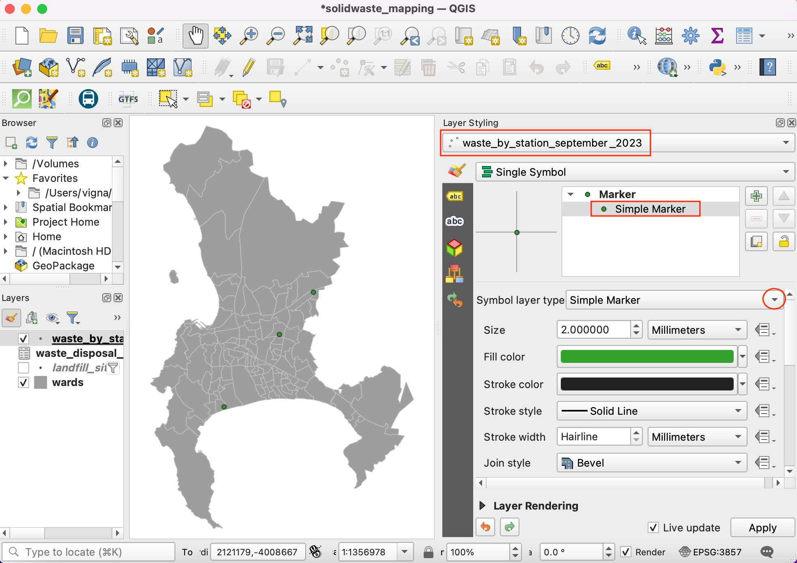

Lavorare con gli Attributi (QGIS3)¶
Il dato GIS Vettoriale è costituito di due parti, geometrie e attributi. Gli attributi sono dati strutturati il cui contenuto è riferito a ciascuna geometria. Questa esercitazione mostra come esaminare gli attributi e come effettuare delle interrogazioni elementari sul loro contenuto.
Descrizione del compito¶
The dataset for this tutorial contains information about populated places of the world. The task is to query and find all the capital cities in the World that have a population greater than 1 million and save the resulting subset as a GeoJSON file.
Altri aspetti che avremo modo di apprendere nel corso dell’esercizio¶
Selezionare delle geometrie da uno strato utilizzando delle espressioni.
Deselezionare delle proprietà da uno strato utilizzando la barra degli strumenti Attributes
Exporting selected features in a layer.
Ottenere i dati necessari.¶
Natural Earth provides a Populated Places dataset. Download the simple (less columns) dataset.
For convenience, you may directly download a copy of the dataset from the link below:
ne_10m_populated_places_simple.zip
Dati in [NATURALEARTH]
Procedimento¶
Individuate il file appena scaricato
ne_10m_populated_places_simple.zipusando il browser di QGIS e fate click su Open. Selezionate quindi il file Apri nella finestra di dialogo Seleziona layer da aggiungere… .

Un nuovo livello
ne_10m_populated_places_simplesarà caricato in QGIS e vedrete nella vista molti punti che rappresentano i punti popolosi nel mondo. Ogni punto ha associati degli attributi. Vediamo quali sono . Trovate la barra con i comandi Attributes Toolbar. Questa barra contiene diversi strumenti per analizzare, visualizzare, selezionare e modificare gli attributi di un livello.

Nota
If you do not see the toolbar, you can enable it from .
Seleziona l’icona Identify nella barra degli strumenti Attributes Toolbar. Quando attivo seleziona un punto nella vista. Gli attributi dell’elemento selezionato con il mouse verranno visualizzati in un pannello Identify Results. Quando hai terminato di identificare gli attributi di elementi, premi il pulsante Close

Invece di visualizzare i valori di un elemento alla volta, possiamo vederli tutti insieme. Cliccate il pulsante Open Attribute Table nella barra degli strumenti Attributes Toolbar. Puoi anche premere il tasto destro del mouse con il puntatore posizionato sul livello
ne_10m_populated_places_simplee selezionare guilabel:Open Attribute Table.

Trovate la colonna pop_max. Questa colonna contiene la popolazione dei punti. Potete cliccare sull’intestazione della colonna per ordinare in modo crescente (o de-crescente ri-cliccando).

Ora andiamo interrogare (creare filtri) su questi attributi. QGIS utilizza la sintassi SQL per applicare formule (espressioni) di interrogazione. Seleziona Seleziona elementi usando un’espressione (Select features using an expression).

Nel pannello che appare Select By Expression , espandere la sezione a destra Campi e valori e fare doppio click sulla voce
pop_max. QGIS automaticamente aggiunge questa voce alla formula (espressione) in basso, usando la sintesi corretta (nomi delle colonne tra doppie virgolette). Per avere un’anteprima dei possibili valori di quella colonna, potete cliccare sul pulsante in basso a destra Carica valori tutti i valori univoci per vedere TUTTI i valori del dataset (se sono molti è consigliabile invece usare il pulsante subito a destra per estrarre solo 10 campioni). In questo esercizio vogliamo trovare tutte le città con popolazione maggiore di1,000,000abitanti. Quindi completate la formula (espressione) e selezionate Seleziona.
"pop_max" > 1000000
Nota
In QIGS il testo con doppie virgolette si riferisce a riferimenti a campi mentre testeo con singole virgolette si riferisce a valori di testo
Noterete alcune righe nella tabella degli attributi che vengono selezionate. Nella parte superiore della finestra degli attributi, cambiano anche i valori che si riferiscono al numero di elementi selezionati.

Chiudete la finestra con il pulsante Chiudi e andate sulla vista QGIS. Noterete che alcuni punti sono ora di colore giallo (il colore predefinito per le geometrie selezionate). Questo è il risultato della nostra formula applicata al dataset, usando la colonna
pop_maxe selezionando gli elementi geometrici corrispondenti ad un valore maggiore di1,000,000per quell’attributo.

Modifichiamo l’espressione SQL per aggiungere una condizione che l’elemento selezionato deve non solo avere più di 1 milione di abitanti ma anche essere una capitale. Per aprire subito l’editor per le espressioni possiamo utilizzare il pulsante Select Features by Expression nella barra degli strumenti Attributes Toolbar.

The field containing data about capitals is adm0cap. The value
1indicates that the place is a capital. We can add this criteria to our previous expression using the and operator. Enter the expression as below and click Select Features and then Close.
"pop_max" > 1000000 and "adm0cap" = 1
Fate click su Chiudi e tornate alla finestra principale di QGIS. Noterete un sottoinsieme di punti selezionati. Questo è il risultato della seconda query e mostra tutti i luoghi del nostro dataset che sono capitali di una nazione e che hanno una popolazione maggiore di 1000000.

Ora salviamo la nostra selezione in un nuovo layer. Fate click sul tasto destro del layer
ne_10m_populated_places_simplee selezionate Esporta –> Salva la selezione con nome….

Scegli il formato che vuoi usando Format. Per questo esercizio usiamo il formato
GeoJSON. GeoJSON è un formato di testo usato nel web-mapping. Cliccare sul pulsante … vicino a File name ed inserirecapitali_popolose.geojsoncome file di output.

I dati originali hanno molti campi/Colonne, possiamo decidere di esportare nel nuovo file solo alcuni di questi campi. Espandiamo la sezione Select fields to export and their export options . Clicca il pulsante Deselect All e seleziona solo le colonne
nameepop_max. Clicca OK.

Il nuovo livello
capitali_popolosesarà caricato in QGIS. Potete nascondere il livello precedentene_10m_populated_places_simplee visualizzare solo i punti del nuovo livello.

If you want to give feedback or share your experience with this tutorial, please comment below. (requires GitHub account)